Lưu Đồ Thuật Toán Tiếp Cận & Điều Trị Bệnh Loét Dạ Dày - Tá Tràng (JSGE 2020)
Sơ đồ phác đồ trực quan hóa toàn bộ lộ trình ra quyết định lâm sàng theo Hướng dẫn JSGE 2020: phân luồng cấp cứu biến chứng (Thủng, Hẹp, Xuất huyết), tiếp cận loét theo căn nguyên (NSAIDs, H. pylori, Vô căn, Mỏm cắt) và chiến lược duy trì phòng ngừa tái phát.
1. Phương Pháp Luận Xây Dựng Hướng Dẫn Lâm Sàng JSGE 2020
- A (Cao - High): Rất tự tin rằng hiệu quả thực tế nằm sát với ước tính hiệu quả.
- B (Trung bình - Moderate): Tự tin vừa phải; nghiên cứu tương lai có thể ảnh hưởng đến ước tính.
- C (Thấp - Low): Mức độ tự tin hạn chế; nghiên cứu tiếp theo có khả năng thay đổi kết luận.
- D (Rất thấp - Very Low): Rất ít tự tin vào ước tính kết quả lâm sàng hiện tại.
- Khuyến cáo mạnh (Strong Recommendation): Lợi ích lâm sàng vượt trội rõ rệt so với nguy cơ hoặc ngược lại; áp dụng cho hầu hết bệnh nhân.
- Khuyến cáo yếu / Gợi ý (Weak/Suggested): Cần cân nhắc cá thể hóa dựa trên giá trị và nguyện vọng của người bệnh.
- Tiêu chuẩn Đồng thuận: Bắt buộc đạt ≥ 70% số phiếu tán thành từ Hội đồng chuyên gia JSGE. Trong bản 2020, 100% các khuyến nghị đều đạt đồng thuận tuyệt đối.
2. Quản Lý Loét Xuất Huyết & Bệnh Nhân Dùng Thuốc Chống Huyết Khối (CQ-1 → CQ-4)
Bệnh nhân loét dạ dày - tá tràng xuất huyết (PUB) đang điều trị thuốc chống huyết khối đặt ra bài toán cân bằng khắt khe giữa nguy cơ tử vong do biến cố tắc mạch/nhồi máu cơ tim khi ngưng thuốc và nguy cơ tái xuất huyết tiêu hóa nếu tiếp tục điều trị.
- Tiếp tục Aspirin đơn trị: Khuyến cáo tiếp tục duy trì sử dụng aspirin ở những bệnh nhân có nguy cơ cao xảy ra biến cố huyết khối tắc mạch. (Khuyến cáo mạnh, Bằng chứng B).
- Chuyển đổi kháng tiểu cầu sang Aspirin: Gợi ý chuyển đổi các thuốc kháng tiểu cầu khác (P2Y12) sang aspirin ở bệnh nhân nguy cơ huyết khối cao. (Khuyến cáo yếu, Bằng chứng D).
- Tạm ngưng kháng tiểu cầu: Gợi ý tạm ngưng sử dụng các thuốc kháng tiểu cầu, ngoại trừ những trường hợp có nguy cơ tắc mạch cao. (Khuyến cáo yếu, Bằng chứng D).
- Xử trí Warfarin: Khuyến cáo tạm ngưng sử dụng warfarin nếu thực sự cần thiết chuẩn bị nội soi can thiệp cầm máu. Khi ngừng warfarin, gợi ý sử dụng heparin bắc cầu hoặc nhanh chóng dùng lại warfarin ngay khi cầm máu ổn định. (Khuyến cáo mạnh, Bằng chứng C).
- Dùng lại DOACs: Gợi ý sử dụng lại các thuốc chống đông đường uống trực tiếp (DOACs) sớm (trong vòng 1 - 2 ngày) sau khi xác nhận cầm máu thành công qua nội soi. (Khuyến cáo yếu, Bằng chứng D).
- Phối hợp Kháng tiểu cầu và Warfarin: Gợi ý chuyển đổi kháng tiểu cầu sang aspirin hoặc cilostazol, đồng thời duy trì warfarin có kiểm soát PT-INR chặt chẽ, hoặc chuyển sang heparin. (Khuyến cáo yếu, Bằng chứng D).
- Liệu pháp Kháng tiểu cầu kép (DAPT): Ở bệnh nhân đang dùng DAPT, khuyến cáo tiếp tục duy trì đơn trị liệu aspirin. (Khuyến cáo mạnh, Bằng chứng D).
- Bệnh nhân dùng Kháng tiểu cầu kép (DAPT): Khuyến cáo phối hợp sử dụng PPI để dự phòng biến chứng xuất huyết tiêu hóa trên (UGIB). (Khuyến cáo mạnh, Bằng chứng A).
- Bệnh nhân dùng Warfarin: Gợi ý phối hợp sử dụng PPI để dự phòng xuất huyết ở bệnh nhân điều trị bằng warfarin có kết hợp thêm kháng tiểu cầu hoặc NSAIDs. (Khuyến cáo yếu, Bằng chứng C).
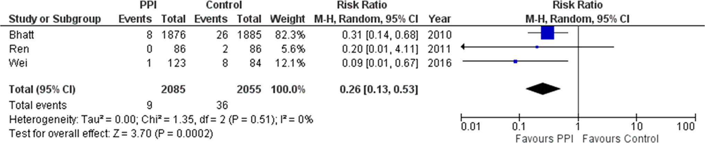
3. Liệu Pháp Tiệt Trừ Helicobacter pylori & Điều Trị Không Tiệt Trừ (CQ-5 → CQ-10)
Mức độ và thời gian ức chế acid dạ dày là yếu tố quyết định hàng đầu tỷ lệ thành công của liệu pháp kháng sinh tiệt trừ H. pylori. JSGE 2020 đánh dấu bước ngoặt lớn với sự xuất hiện của chất ức chế acid cạnh tranh kali (P-CAB, Vonoprazan).
- Phác đồ chứa Vonoprazan (P-CAB): Khuyến cáo sử dụng phác đồ 3 thuốc chứa Vonoprazan (VPZ 20mg x 2 lần/ngày) phối hợp Amoxicillin (750mg-1000mg x 2 lần/ngày) và Clarithromycin (200mg-400mg x 2 lần/ngày) trong 7 ngày làm phác đồ đầu tay nhờ đạt tỷ lệ tiệt trừ vi khuẩn vượt trội rõ rệt so với phác đồ chứa PPI thông thường. (Khuyến cáo mạnh, Bằng chứng A).
- Khi kháng Clarithromycin cao (> 15%): Phối hợp Amoxicillin + Metronidazole được khuyến cáo mạnh mẽ.
- Nếu sử dụng PPI: Gợi ý áp dụng liệu pháp nối tiếp (sequential therapy) hoặc phác đồ 4 thuốc đồng thời (concomitant quadruple therapy) để tối ưu hóa tỷ lệ tiệt trừ so với phác đồ 3 thuốc tiêu chuẩn. (Khuyến cáo yếu, Bằng chứng A).
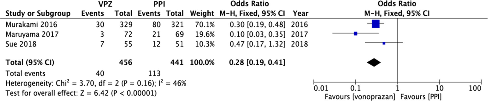
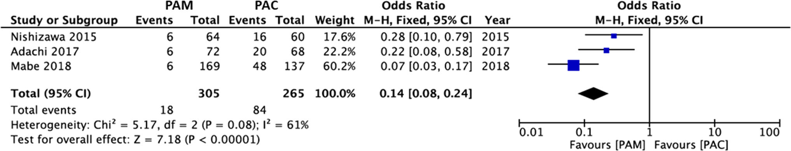
4. Sinh Lý Bệnh, Điều Trị & Dự Phòng Loét Do Thuốc NSAIDs (CQ-11 → CQ-17)
Thuốc kháng viêm không steroid không chọn lọc (nonselective NSAIDs) phá hủy hàng rào chất nhầy và biểu mô bảo vệ dạ dày tá tràng qua ức chế COX-1 làm cạn kiệt prostaglandin sinh lý.
- Ngừng thuốc NSAIDs: Khi xuất hiện ổ loét, khuyến cáo hàng đầu là ngừng sử dụng NSAIDs và bắt đầu điều trị bằng các thuốc chống loét (PPI hoặc P-CAB).
- Trường hợp bắt buộc phải tiếp tục sử dụng NSAIDs: Nếu bệnh lý cơ xương khớp/tim mạch bắt buộc tiếp tục dùng NSAIDs, thuốc ức chế bơm proton (PPIs) được khuyến cáo là lựa chọn số 1 để làm liền ổ loét. Tỷ lệ liền sẹo loét sau 8 tuần ở nhóm dùng PPI vượt trội hoàn toàn so với H2RA hoặc chất đồng đẳng prostaglandin.
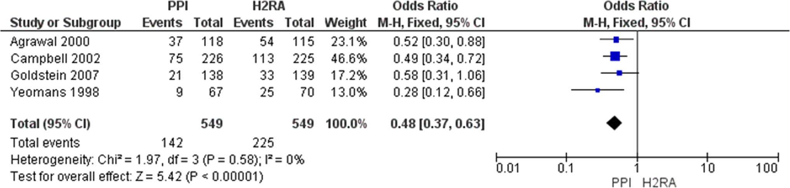
Tiền sử loét biến chứng chảy máu: Khuyến cáo phối hợp thuốc ức chế chọn lọc COX-2 (Celecoxib) + thuốc PPI.
Không có tiền sử loét: Không cần thiết phải sử dụng thêm thuốc dự phòng.
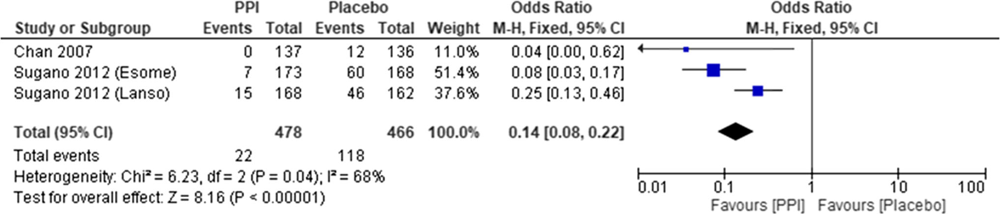
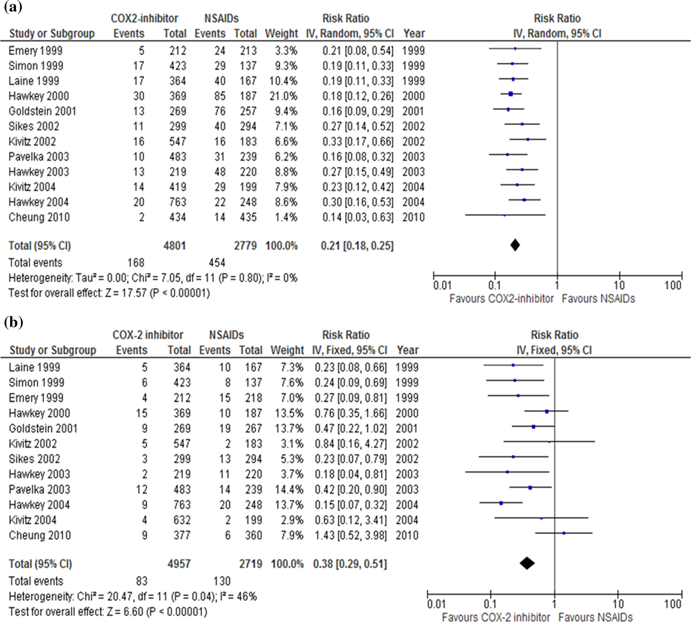
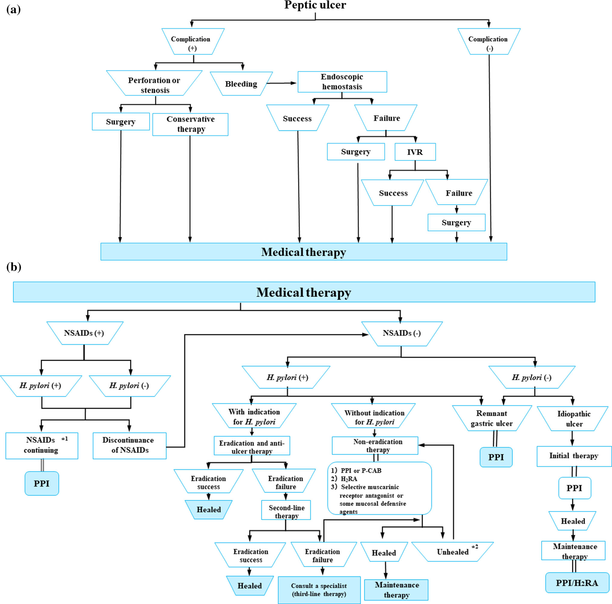
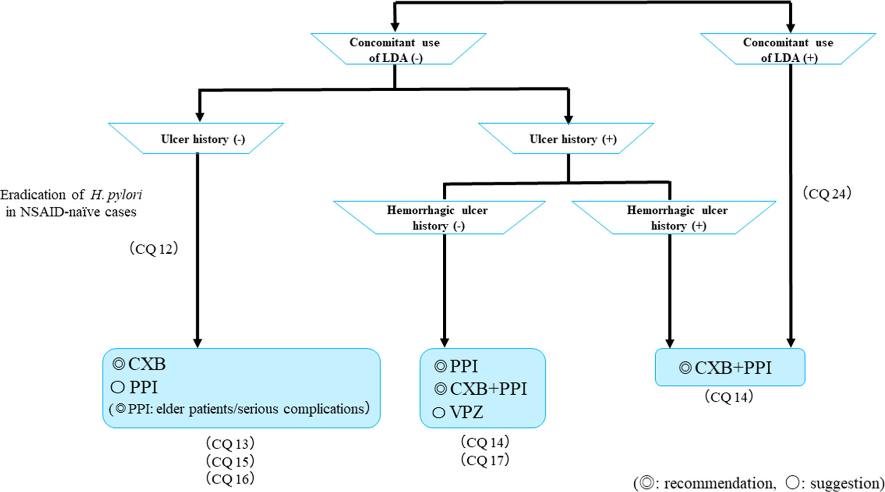
5. Sinh Lý Bệnh & Dự Phòng Loét Do Aspirin Liều Thấp (LDA) (CQ-18 → CQ-25)
Aspirin liều thấp (LDA, 75 - 100 mg/ngày) ức chế không hồi phục enzyme COX-1 tiểu cầu, làm suy giảm dòng máu nuôi niêm mạc và gia tăng nguy cơ loét cũng như chảy máu tiêu hóa nghiêm trọng.
Dự phòng tiên phát (chưa có tiền sử loét): Khuyến cáo sử dụng PPI (Mạnh, A).
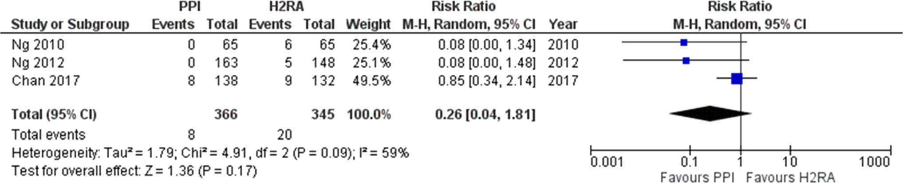
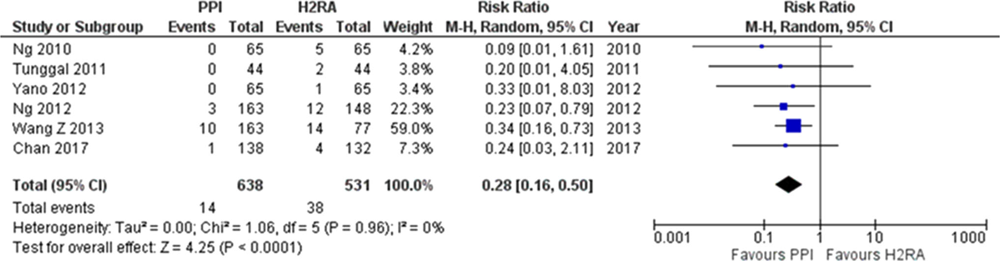
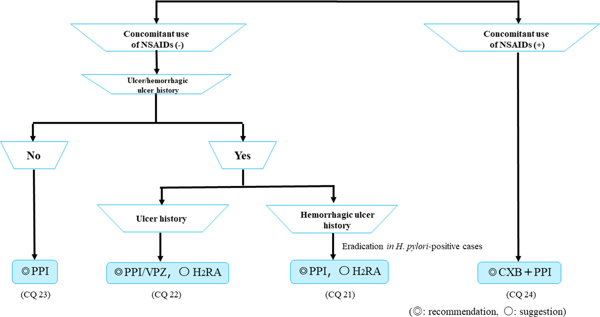
6. Xử Trí Loét Vô Căn, Loét Mỏm Cắt Dạ Dày, Phẫu Thuật & Thiếu Máu Cục Bộ (CQ-26 → CQ-28, FRQ-1)
- Định nghĩa: Loét vô căn là những ổ loét xuất hiện ở bệnh nhân âm tính với H. pylori và hoàn toàn không sử dụng NSAIDs hay aspirin.
- Điều trị ban đầu: Gợi ý sử dụng PPIs làm liệu pháp điều trị ban đầu. Lưu ý sinh lý bệnh: Loét vô căn thường kháng trị và khó liền sẹo hơn loét do H. pylori (tỷ lệ liền sẹo sau 12 tuần PPI chỉ đạt 77.4% so với 95.0% ở loét do H. pylori).
- Dự phòng tái phát: Do loét vô căn có tỷ lệ tái phát tích lũy rất cao (lên tới 42.3% trong vòng 7 năm nếu không điều trị dự phòng), gợi ý điều trị duy trì kéo dài bằng PPIs hoặc H2RAs để ngăn ngừa tái phát chảy máu.
- Cơ chế bệnh sinh:
- Nguyên nhân cấp tính: Thường xảy ra sau thủ thuật can thiệp mạch (như nút mạch hóa dầu - TACE điều trị ung thư gan, hoặc nút mạch cầm máu dạ dày tá tràng) gây thuyên tắc mạch nuôi dưỡng, hoặc do huyết khối hệ thống.
- Nguyên nhân mạn tính: Xuất hiện ở bệnh nhân xơ vữa động mạch gây hẹp nặng động mạch thân tạng (celiac artery) hoặc động mạch mạc treo tràng trên (SMA).
- Hình ảnh nội soi đặc trưng: Xuất hiện các ổ loét dọc (longitudinal ulcers), niêm mạc xung quanh phù nề, xung huyết đỏ sẫm do thiếu máu nuôi.
- Tiếp cận điều trị bảo tồn: Gợi ý sử dụng PPIs hoặc Misoprostol phối hợp nhịn ăn nuôi dưỡng tĩnh mạch. Do vùng hành tá tràng phía sau tiếp xúc với dịch mật và dịch tụy kiềm, Misoprostol có vai trò bảo vệ niêm mạc đặc biệt quan trọng. Bắt buộc chụp mạch hoặc MSCT bụng để khảo sát tái thông mạch hoặc phẫu thuật nếu có hoại tử tiến triển.
Bảng Phân Loại & Liều Lượng Các Thuốc Điều Trị PUD Chuẩn Theo JSGE 2020
| Nhóm Thuốc | Tên Hoạt Chất | Liều Dùng Tiêu Chuẩn (JSGE) | Chỉ Định & Ưu Thế Lâm Sàng Vượt Trội |
|---|---|---|---|
| P-CAB Đột Phá |
Vonoprazan (Takecab) | 20 mg x 2 lần/ngày (Tiệt trừ HP) 10 - 20 mg x 1 lần/ngày (Dự phòng loét) |
Ức chế acid nhanh, mạnh, không phụ thuộc bữa ăn/CYP2C19. Tiệt trừ H. pylori bước 1 vượt trội (OR 0.28); dự phòng loét NSAID/LDA non-inferior so với PPI. |
| PPIs Hàng Đầu |
Esomeprazole, Rabeprazole, Lansoprazole, Omeprazole | Liều chuẩn x 1-2 lần/ngày (PO/IV) | Lựa chọn số 1 điều trị loét dạ dày tá tràng không tiệt trừ, loét do NSAIDs, dự phòng chảy máu do LDA, loét mỏm cắt dạ dày và sau can thiệp nội soi cầm máu. |
| H2RAs Thay Thế |
Famotidine, Nizatidine, Cimetidine | Famotidine 20 mg x 2 lần/ngày | Lựa chọn thay thế bước 1 khi không dung nạp PPI/P-CAB; điều trị duy trì ngừa tái phát loét vô căn. Kém hiệu quả hơn PPI trong dự phòng chảy máu do LDA. |
| COX-2 Chọn Lọc Bảo Vệ Dạ Dày |
Celecoxib (Celebrex) | 100 - 200 mg x 1-2 lần/ngày | Thay thế NSAIDs không chọn lọc. Giảm 79% loét dạ dày (RR 0.21) và 62% loét tá tràng (RR 0.38). Bắt buộc phối hợp PPI ở bệnh nhân có tiền sử loét/chảy máu. |
| Kháng Sinh Tiệt Trừ HP |
Amoxicillin, Clarithromycin, Metronidazole, Sitafloxacin | Theo phác đồ 7 ngày chuẩn Nhật Bản | Bước 1: VPZ + Amox + Clari (hoặc Metro); Bước 2: PAM (PPI/VPZ + Amox + Metro); Bước 3: Phác đồ chứa Sitafloxacin. |
| Bảo Vệ Niêm Mạc Bổ Trợ |
Misoprostol, Sucralfate, Pirenzepine | Misoprostol 200 mcg x 3-4 lần/ngày | Đồng đẳng Prostaglandin E1; ưu tiên lựa chọn trong loét tá tràng do thiếu máu cục bộ (Ischemic ulcer) và thay thế khi chống chỉ định kháng tiết acid. |